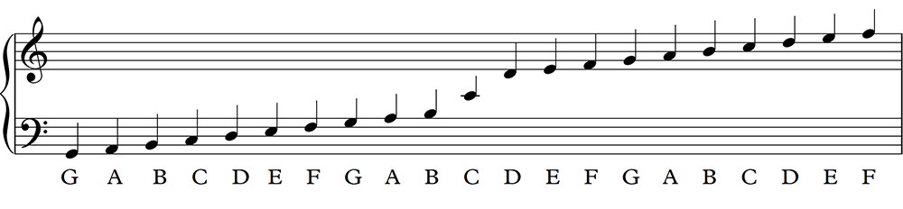
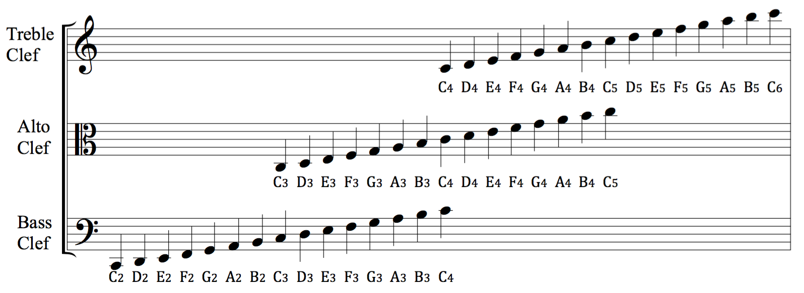

Music-Glossary
Music Glossary 音乐术语表
[toc]
The Grand Staff 五线谱


五线谱上的谱号，有三种：
- Treble Staff，高音谱号
- Bass Stafu，低音普号
- …
Treble Clef
高音谱号，一般用Piano键盘的右手来演奏，适合弹和弦。
4 Spaces：FACE, Face.
5 Lines：EGBDF，Every Good Boy Does Fine.
Bass Staff
低音谱号，一般用Piano键盘的左手来演奏，适合弹伴奏。
4 Spaces: ACEG, All Cows Eat Grass.
5 Lines：GBDFA，Good Boys Do Fine Always.
Notes & Rests
Notes: 音符
Rests: 休止符
Note Values
Note Values: 音符时值
4&4 Time Signature 的谱子，quater note value = 1
音符时值表
Extending The Note or Rest
There’s 2 ways to extend a note.
1.Ties
Tie connects two notes together and play as one.
Example: haft note + quater note = 3 beats.

2.Dots
When dot is added to a note or rest, it always increase the value of that note or rest by one half.
Example: half note + dot = 3 beats.

Measures
Measure：小节
Measures are the areas between bars lines.
Time Signature.
Time Signature: 拍号
Like 4&4.
The top number shows how many beats are in each measure.
The bottom number shows what note value is equal to one beat.

Illustrate:
There are 4 beats in each measure.
1 quater note is equal to a single beat.
Scale
音阶
Major Scale
Major Scale: 大调音阶
Minor Scale
Minor Scale: 小调音阶
C Major Scale
C Major Scale: 大调音阶
If we play all the white keys from C to C, it’s called a C Major Scale.
Major Scale = 2 whole steps + 1 half step + 3 whole steps + 1 half step.
It means 2 whole steps + 1 half step + 3 whole steps + 1 half step will allow us to create a C Major Scale starting with any note on the piano.
Flats & Sharps
Flats和Sharps是一黑键的两个不同名称，分别代表降调和升调。
Whole Steps & Half Steps
包括黑键与白键。
Whole Steps or Half Steps & Whole Tones or Hafl Tones: 全音和半音
全音和半音是键盘上相邻的两个键之间的关系。
全音：两个键之间有一个键
半音：两个键之间没有键
Chords
Chords: 和弦，3个或3个以上的键一起按
和弦命名：根音 + 大调/小调 + 和弦. 如：C Major Chord
Major Chord 大调和弦
大调和弦，声音听起来愉快
定义：根音和3音之间有2个全音的和弦
技巧：根音为C、F、G的3和弦
Minor Chord 小调和弦
小调和弦，声音听起来忧伤
定义：根因和3音之间有1个全音1个半音的和弦
技巧：根音为D、E、A、B的3和弦
区分Major/Minor Chord
根音和3音之间有2个whole steps的是Major Chord.
和弦的音
根音 root/1
3音 third
5音 fifth
和弦转位 Chords Inversion
root/基础位：1 3 5
第一转位：3 5 1
第二转位：5 1 3
和弦转位 技巧
两个白键右边的键是根音，左边的键是5音，另外一个键是3音
Sustain Padal
延音踏板
Metronome
节拍器
tempo：120，表示120拍每分钟